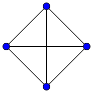
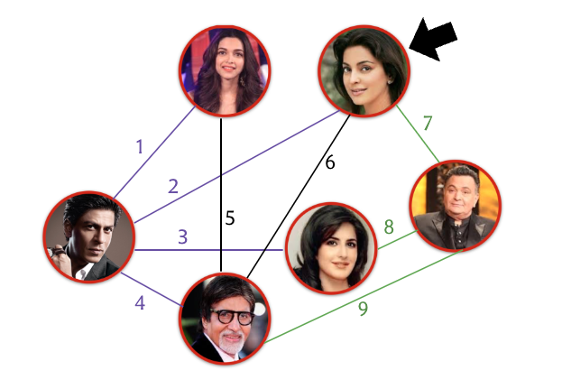

Representing Graphs
Drawing and Walking Challenges
At some point of time in your life, you have likely been challenged to draw a kite-like figure:

without ever lifting your pencil/pen/quill off the paper. You may have noticed that there are figures that are particularly elusive to this persistent style of drawing, while others are pleasingly possible to draw in this fashion.
The city of Königsberg in Prussia (now Kaliningrad, Russia) was set on both sides of the Pregel River, and included two large islands—Kneiphof and Lomse—which were connected to each other, and to the two mainland portions of the city, by seven bridges.
Devise a walk through the city that would cross each of those bridges once and only once. Try this yourself on a few different maps at Mathigon!

The question was addressed and answered by Euler (1736). He did not solve this by “messing around” with all possible ways of walking around the city and checking if any of the walks satisfied the desired criteria. His more systematic approach involved modeling the problem abstractly, and making some key observations that ultimately led to the solution — not just for this problem, but for all problems with a similar framing!
The picture below shows a few popular actors, with edges connecting pairs of those who have worked together in a movie together1. The example is designed so that there are exactly two actors who participate in an odd number of pairings.
We can work through the “bridges puzzle” on this graph. In the classroom, we all started with the vertex representing Juhi Chawla, “walked around” using every connection exactly once, and the fun effect is that everyone ends up at the vertex representing Rishi Kapoor (or solves the puzzle incorrectly). From here, you can probably begin to guess the role of the two special vertices in the puzzle.

This activity is an adaptation of the example from the Intro to Algorithms course at Udacity, where it appears in the first chapter with the title “A Social Network Magic Trick”.
Here’s another similar-sounding and classic problem involving a chessboard, also posed to Euler:
“I found myself one day in a company where, on the occasion of a game of chess, someone proposed this question: To move with a knight through all the squares of a chess board, without ever moving two times to the same square, and beginning with a given square.”
The origins of this problem — the so-called “Knight’s Tour” — goes all the way back to the 9th century AD, where it is described in Rudraṭa’s Kavyalankara. Here’s an example of a knight’s tour, as seen on Wikipedia:

Although deceptively similar to the problem of the bridges, this is a different problem with two important contrasts:
- we were previously not allowed to reuse bridges, here we are not allowed to reuse squares, and
- we were previously obliged to use every bridge, here we are not required to make every possible move that exists.
Generalizing from the 8x8 chessboard, you could ask yourself what (n \times n) boards admit such tours.
Abstractions via Graphs
It’s useful to model such problems using graphs (aka networks). And we’re not talking sine curves here — a graph in our context is a structure that represents relationships between entities.
Usually these relationships are between two entities at a time. Indeed, this is typically already quite a bit to keep track of, hence graphs that do more are said to be hyper. That is to say, graphs that model relationships involving more than two entities in one go are generally called hypergraphs, and they will be a story for another day.
For now, we will variously refer to entities as vertices or nodes, and relationships as edges or connections. Come to think of it, graphs are everywhere:
| Entities | Two entitites are in a relationship if… |
|---|---|
| People | they are in a relationship. |
| Cats | they have fought each other. |
| Actors | they have been in a movie together. |
| Airports | there is a direct flight between them. |
| Landmasses | there is a bridge connecting them. |
| Songs | one of the tunes was copied from the other. |
| Subsets of [42] | one is contained in another. |
| Ingredients | there is a recipe that uses them together. |
| Webpages | one of them has a link leading to the other. |
| Twitter Users | one of them follows the other2 |
| Locations on a Chessboard3 | one of them is reachable from the other via a knight move. |
We usually like to distinguish between graphs where the relationships are potentially one-sided (such as people in a relationship), and those where they are mutual (such as ingredients in a recipe). Edges like these are called directed and undirected, respectively.
Depending on what the graph is modeling, we may not allow for entities to entertain relationships with themselves (e.g, flights don’t come back to airports they took off from). In other contexts, it makes sense to allow for this (e.g, a set always contains itself). An edge that connects a vertex to itself is called a self-loop4.
Sometimes, it is reasonable that there are multiple edges between a fixed pair of vertices (for example, consider that there are several recipies that use salt and potatoes). Multiple edges are useful to model a multitude of relationships, and are often called multiedges when used.
A simple graph is one that does not have either self-loops or multiedges.
Finally, it is worth mentioning that some relationships naturally connect more two entities. For example, in an actor collaboration graph, you would find edges between Amitabh Bachchan, Juhi Chawla, and Shah Rukh Khan. You would also find edges between Akshay Kumar, Dhanush, and Sonam Kapoor. In the first example, there happens to be one film that all three actors feature in together, while this is not the case in the latter, at least at the time of this writing. As such, the graph does not have enough structure to reveal this distinction: it looks exactly the same in both cases!
For an actor-collaboration graph, allowing for n-way relationships would make room for accurately capturing information about both actors and movies. Indeed, every movie could be represented by an ‘edge’ — the subset of actors who belonged to the cast. Such graphs are called hypergraphs or set systems.
While hypergraphs are a very useful generalization of graphs, they will be largely out of scope for our discussions in this course. To make up for that, here is a different workaround to capture all the information we have in the actor-collaboration graph example. Instead of having a vertex for every actor, we introduce a vertex for every actor and for every movie. Now, an actor a and a movie m are connected by an edge if a belongs to the cast of m. Observe that this approach can be used to “convert” any hypergraph into a graph.
A little more terminology before we move on: I promise that we’re almost done introducing new words!
For an undirected graph, a vertex u is called a neighbor of a vertex v if (u,v) is an edge. For a directed graph, the presence of the edge (u,v) would make v an out-neighbor of u and u an in-neighbor of v.
For an undirected graph, the degree of a vertex v is the number of neighbors of v. For a directed graph, the in-degree and out-degree of v is the number of in-neighbors and out-neighbors of v, respectively.
Representing Graphs
If you wanted to tell your program about a graph, there are a few different ways you could go about it. Let’s assume that we’re trying to represent a graph G on n nodes, labeled 1 through n, and m edges.
Before reading further, it would be worth spending some time thinking about how you would represent a graph. Based on our discussions so far, you might counter this with the question: “Well, what do you need it for?” — and that’s a fair reaction!
Listed below are some fairly common operations that come up when dealing with graphs.
1. add edge u v
2. remove edge u v
3. add vertex v
4. remove vertex v
5. is u a neighbor of v?
6. find degree vEdge Lists. The most natural way is to perhaps just braindump the full list of edges. This gives us all we need to know about G.
Since this is just a plain list, you could implement it either as an array or as a linked list.
Adjacency Matrix. The other way is to block off a n \times n array A of integers. You could then have:
\begin{equation*} A[i][j] = \begin{cases} 1 & \text{if } (i,j) \in E,\\ 0 & \text{otherwise.} \end{cases} \end{equation*}
Adjacency Lists. Finally, you could have an array A of size n, with A[i] pointing to a list of the neighbors of the vertex i if the graph is undirected, and out-neighbors if the graph is directed.
Again, since these are just lists, they could be, in principle, implemented either as arrays or linked lists. We will follow the traditional choice of implementing them as lists.
It should be no surprise at this point that there is no “right” answer to the choice of representation. You might have noticed, for instance, that an adjacency matrix always reserves n^2 units of space to store G, while the amount of space consumed by the other two representations is proportional to m. Notice that the number of edges in a graph can be as large as \approx n^2 for simple graphs, so there certainly are graphs for which the space consumption looks the same for all representations. However, for graphs where there aren’t as many edges, then the matrix representation is likely wasteful in terms of space, although you may have other good reasons for sticking to it.
Let’s classify expenses incurred as follows.
- Brilliant. When the procedure only needs constant time.
- Decent. When the procedure always wraps up in, and sometimes needs, time proportional to the maximum degree of the graph.
- (n/m)-tolerable. When the procedure always wraps up in, and sometimes needs, time proportional to the number of vertices/edges in the graph.
- (n/m)-painful. When the procedure always wraps up in, and sometimes needs, time proportional to the number of vertices/edges in the graph squared.
Here’s a run down of how the representations above fare with respect to some of the common operations mentioned in the opening exercise.
| Operations | Adj. Matrix | Adj. List | Edge List |
|---|---|---|---|
| Adding a vertex | n-Painful | n-Tolerable | Decent |
| Deleting a vertex | n-Painful | n-Tolerable | m-Tolerable |
| Adding an edge | Brilliant | Brilliant | Brilliant |
| Deleting an edge | Brilliant | Decent | m-Tolerable |
| Finding degree(v) | n-Tolerable | Decent | m-Tolerable |
| Check if (u,v) is an edge | Brilliant | Decent | m-Tolerable |
It would be a good exercise to validate that these claims indeed make sense.
Now that we’re comfortable with storing graphs, next up, we’ll talk about exploring them.
Footnotes
I’ve been told that this representation is not complete, and indeed, I have only verified that the connections are justified… some of the missing edges are likely to be inaccurate.↩︎
Find out more about Twitter’s WTF (who-to-follow) service.↩︎
See how the puzzle about exchanging the positions of black and white knights can be recast as a graph problem.↩︎
There are even graphs that only have self-loops.↩︎